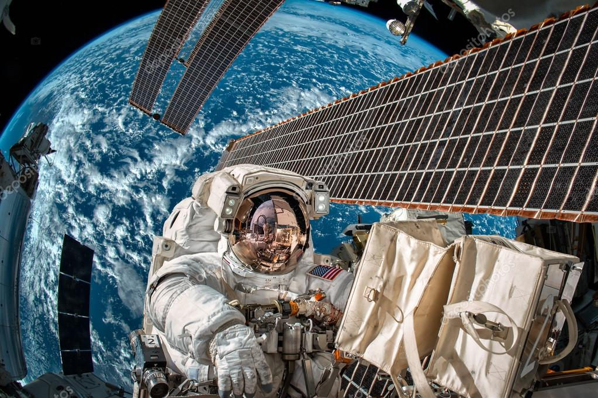

Naar de ruimte ?
Heeft u ooit de universum willen zien met uw eigen ogen?
Dan kunt u uw droom laten uitkomen bij ISS.
U gaat op eigen kosten all
inclusief 4 weken naar de ruimte. U gaat elke week andere gerechten eten van
andere landen. Landen zijn als volgt:
China, Amerika, Rusland en Litouwen.
U gaat hier leven bij de gewoontes van
andere culturen. In de 4 weken dat u
hier bent krijgt u met 4 culturen temaken.
Elke week krijgt u een andere cultuur. Wij gaan elke week een stukje cultuur
proeven uit een andere keuken.
Ook gaan wij hun kledingstijl dragen.
Voor de rest gaan we genieten van het uitzicht, er word daar ook verteld over
de ruimte
en u leert meteen de belangrijkste dingen van ISS.
U gaat slapen in cabines en daar staan bedden voor u klaar, de bedden zijn in
en uitklapbaar.
Hopelijk zien we u snel.